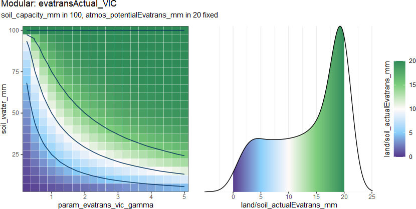
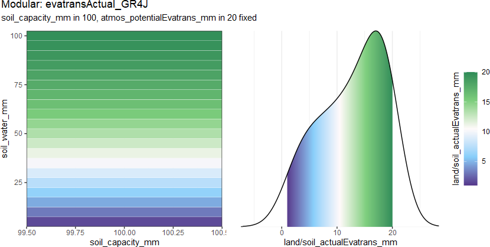
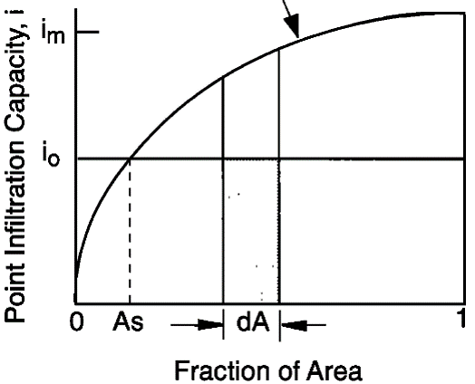

actuall evapotranspiration
evatransActual.RdActual ET, or actual evapotranspiration, is a measure of the amount of water that is lost from the land surface through evaporation and transpiration by plants.
Under the concept of the conceptual HM, the actual ET is always calculated by the potential ET \(E_p\), which evaluates the meteorological and landuse (vegetation) situations. The second point to consider is the water availability of the land or soil.
So we can give the function from:
\[E_a = f_{evatransActual}(D_{atms}, D_{lssg})\]
to:
\[E_a = f_{evatransActual}(E_p, W_{lssg}, ...) = k^* E_p\]
where
\(E_a\) is
land_evatrans_mmorsoil_evatrans_mm\(E_p\) is
atmos_potentialEvatrans_mm\(k^*\) is estimated ratio.
Then the different evatransActual methods will estimate the ratio \(k^*\).
The output density distribution from 7 methods:

evatransActual_SupplyRatio(
atmos_potentialEvatrans_mm,
water_mm,
capacity_mm,
param_evatrans_sur_k
)
evatransActual_SupplyPow(
atmos_potentialEvatrans_mm,
water_mm,
capacity_mm,
param_evatrans_sup_k,
param_evatrans_sup_gamma
)
evatransActual_VIC(
atmos_potentialEvatrans_mm,
water_mm,
capacity_mm,
param_evatrans_vic_gamma
)
evatransActual_GR4J(atmos_potentialEvatrans_mm, water_mm, capacity_mm)
evatransActual_UBC(
atmos_potentialEvatrans_mm,
water_mm,
capacity_mm,
param_evatrans_ubc_gamma
)
evatransActual_LiangLand(
atmos_potentialEvatrans_mm,
water_mm,
capacity_mm,
param_evatrans_lia_gamma
)
evatransActual_LiangSoil(
atmos_potentialEvatrans_mm,
water_mm,
capacity_mm,
param_evatrans_lia_B
)Arguments
- atmos_potentialEvatrans_mm
(mm/m2/TS) potential / reference evapotranspiration
- water_mm
(mm/m2/TS) water volume in
soilLy,groundLyor intercept oflandLy, same assoil_water_mm,ground_water_mmorland_interceptWater_mm- capacity_mm
(mm/m2) water storage capacity in
soilLy,groundLyor intercept oflandLy, same assoil_capacity_mm,ground_capacity_mmorland_interceptCapacity_mm- param_evatrans_sur_k
<0.1, 1> parameter for
evatransActual_SupplyRatio(), ratio of potential ET, that is estimated as actually ET- param_evatrans_sup_k
<0.1, 1> parameter for
evatransActual_SupplyPow(), ratio of this method- param_evatrans_sup_gamma
<1, 5> parameter for
evatransActual_SupplyPow(), exponent of this method- param_evatrans_vic_gamma
<0.2, 5> parameter for
evatransActual_VIC()- param_evatrans_ubc_gamma
<0.5, 2> parameter for
evatransActual_UBC()- param_evatrans_lia_gamma
<0.4, 1> parameter for
evatransActual_LiangLand()- param_evatrans_lia_B
<0.01, 3> parameter for
evatransActual_LiangSoil()
Value
actually ET in (mm/m2/TS)
evaporation in interception (landLy),
land_evatrans_mmtranspiration in root
evaporation in soil (soilLy),
soil_evatrans_mm
_SupplyRatio:

The water content (the ratio to the maximal capacity) is considered as th main factors for the ratio \(k^*\). \[k^* = k \frac{W}{C}\] where
\(W\) is water volume in (mm/m2/TS),
water_mm,land_interceptWater_mm,soil_water_mm\(C\) is water capacity in (mm/m2),
capacity_mm,land_interceptCapacity_mm,soil_capacity_mm\(k\) is
param_evatrans_sur_k
_SupplyPow:

The water content (the ratio to the maximal capacity) is considered as th main factors for the ratio \(k^*\). \[k^* = k \left(\frac{W}{C}\right)^\gamma\] where
\(k\) is
param_evatrans_sup_k\(\gamma\) is
param_evatrans_sup_gamma
_VIC (Wood et al. 1992) :

This method is similar with evatransActual_SupplyPow(), estimate the water content in the storage.
\[k^* = 1-\left(1-\frac{W}{C}\right)^{\gamma}\]
where
\(\gamma\) is
param_evatrans_vic_gamma
_GR4J (Perrin et al. 2003) :

It is a little different than other method, it estimate not the ratio \(f\), rather dieectly a equation with potential ET and water content. And it need no parameter. \[E_a = \frac{W\left(2-\frac{W}{C}\right)\tanh \left(\frac{E_p}{C}\right)}{1 + \left(1-\frac{W}{C}\right)\tanh \left(\frac{E_p}{C}\right)}\]
_UBC (Quick and Pipes 1977) :

It estimates the water content in the storage.
(This is a little different than original, the parameter P0AGEN is replaced by \(\frac{C}{\gamma}\).)
\[k^* = 10^{\gamma \frac{W-C}{C}}\]
where
\(\gamma\) is
param_evatrans_ubc_gamma
Land_Liang (Liang et al. 1994) :

It is also a similar method like evatransActual_SupplyPow(),
but it will estimate the supply ability agian, whwn the water is still not enough.
\[E_a^* = \left(\frac{W}{C}\right)^\gamma E_p\]
\[E_a = \min \left(1, \frac{W}{E_a^*}\right) E_a^*\]
where
\(E_l^*\) is the first estimated actuall ET
\(E_l\) is actuall ET from land,
land_evatrans_mm\(\gamma\) is
param_evatrans_lia_gamma
_LiangSoil (Liang et al. 1994) :

It estimates the water content in the storage.
(This is a little different than original, the parameter P0AGEN is replaced by \(\frac{C}{\gamma}\).)
\[k^* = \int_{0}^{A_{s}} {\rm d} A + \int_{A_{s}}^{1} \frac{i_{0}}{i_{m} [1-(1-A)^{1 / B} ]} {\rm d} A \]
where
\(B\) is
param_evatrans_lia_B\(A\) is fraction of area

References
Liang X, Lettenmaier D, Wood E, Burges S (1994).
“A Simple Hydrologically Based Model of Land Surface Water and Energy Fluxes for GSMs.”
J. Geophys. Res., 99.
doi: 10.1029/94JD00483
.
Perrin C, Michel C, Andr攼㸹assian V (2003).
“Improvement of a Parsimonious Model for Streamflow Simulation.”
Journal of Hydrology, 279(1-4), 275--289.
ISSN 00221694, doi: 10.1016/S0022-1694(03)00225-7
.
Quick MC, Pipes A (1977).
“U.B.C. WATERSHED MODEL / Le Mod攼㸸le Du Bassin Versant U.C.B.”
Hydrological Sciences Bulletin, 22(1), 153--161.
ISSN 0303-6936, doi: 10.1080/02626667709491701
.
Wood EF, Lettenmaier DP, Zartarian VG (1992).
“A Land-Surface Hydrology Parameterization with Subgrid Variability for General Circulation Models.”
Journal of Geophysical Research, 97(D3), 2717.
ISSN 0148-0227.